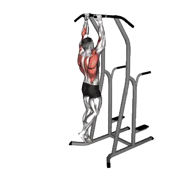

中级平均次数
一般中级训练者的参考值。
男性
15
女性
7
中立握引体向上平均次数
| 等级 | ||
|---|---|---|
| 初学者 | < 1 | < 1 |
| 初级者 | 5 | < 1 |
| 中级者 | 15 | 7 |
| 进阶者 | 28 | 15 |
| 菁英 | 41 | 25 |
注：这些数值是单组可完成平均次数的估算。体重、动作幅度、节奏等个人因素都可能造成差异。详细数据请参考下方表格。
中立握引体向上标准次数
男性按体重(lb)数据 [次数]
| 体重 | 初学者 | 初级者 | 中级者 | 进阶者 | 菁英 |
|---|---|---|---|---|---|
| 110 | < 1 | 5 | 15 | 29 | 43 |
| 120 | < 1 | 5 | 16 | 28 | 42 |
| 130 | < 1 | 6 | 16 | 28 | 41 |
| 140 | < 1 | 6 | 16 | 28 | 40 |
| 150 | < 1 | 7 | 16 | 27 | 39 |
| 160 | < 1 | 7 | 15 | 26 | 38 |
| 170 | < 1 | 7 | 15 | 26 | 37 |
| 180 | < 1 | 7 | 15 | 25 | 36 |
| 190 | < 1 | 7 | 15 | 25 | 35 |
| 200 | < 1 | 7 | 14 | 24 | 34 |
| 210 | < 1 | 6 | 14 | 23 | 33 |
| 220 | < 1 | 6 | 13 | 23 | 32 |
| 230 | < 1 | 6 | 13 | 22 | 31 |
| 240 | < 1 | 6 | 13 | 21 | 30 |
| 250 | < 1 | 6 | 12 | 21 | 30 |
| 260 | < 1 | 6 | 12 | 20 | 29 |
| 270 | < 1 | 5 | 11 | 20 | 28 |
| 280 | < 1 | 5 | 11 | 19 | 27 |
| 290 | < 1 | 5 | 11 | 18 | 26 |
| 300 | < 1 | 5 | 10 | 18 | 26 |
| 310 | < 1 | 4 | 10 | 17 | 25 |
男性按年龄数据 [次数]
| 年龄 | 初学者 | 初级者 | 中级者 | 进阶者 | 菁英 |
|---|---|---|---|---|---|
| 15 | < 1 | < 1 | 9 | 19 | 31 |
| 20 | < 1 | 5 | 14 | 26 | 39 |
| 25 | < 1 | 5 | 15 | 28 | 41 |
| 30 | < 1 | 5 | 15 | 28 | 41 |
| 35 | < 1 | 5 | 15 | 28 | 41 |
| 40 | < 1 | 5 | 15 | 28 | 41 |
| 45 | < 1 | 4 | 13 | 25 | 38 |
| 50 | < 1 | 1 | 10 | 22 | 34 |
| 55 | < 1 | < 1 | 8 | 18 | 29 |
| 60 | < 1 | < 1 | 5 | 14 | 24 |
| 65 | < 1 | < 1 | 2 | 10 | 19 |
| 70 | < 1 | < 1 | < 1 | 7 | 14 |
| 75 | < 1 | < 1 | < 1 | 3 | 9 |
| 80 | < 1 | < 1 | < 1 | < 1 | 6 |
| 85 | < 1 | < 1 | < 1 | < 1 | 3 |
| 90 | < 1 | < 1 | < 1 | < 1 | < 1 |
女性按体重(lb)数据 [次数]
| 体重 | 初学者 | 初级者 | 中级者 | 进阶者 | 菁英 |
|---|---|---|---|---|---|
| 90 | < 1 | < 1 | 6 | 13 | 21 |
| 100 | < 1 | < 1 | 6 | 13 | 22 |
| 110 | < 1 | < 1 | 7 | 13 | 21 |
| 120 | < 1 | < 1 | 7 | 14 | 21 |
| 130 | < 1 | 1 | 7 | 13 | 21 |
| 140 | < 1 | 1 | 7 | 13 | 20 |
| 150 | < 1 | 1 | 7 | 13 | 20 |
| 160 | < 1 | 2 | 7 | 13 | 19 |
| 170 | < 1 | 2 | 7 | 12 | 19 |
| 180 | < 1 | 2 | 7 | 12 | 18 |
| 190 | < 1 | 1 | 7 | 11 | 17 |
| 200 | < 1 | 1 | 7 | 11 | 17 |
| 210 | < 1 | 1 | 6 | 11 | 16 |
| 220 | < 1 | 1 | 6 | 10 | 16 |
| 230 | < 1 | 1 | 6 | 10 | 15 |
| 240 | < 1 | 1 | 6 | 10 | 14 |
| 250 | < 1 | < 1 | 5 | 9 | 14 |
| 260 | < 1 | < 1 | 5 | 9 | 13 |
女性按年龄数据 [次数]
| 年龄 | 初学者 | 初级者 | 中级者 | 进阶者 | 菁英 |
|---|---|---|---|---|---|
| 15 | < 1 | < 1 | 2 | 9 | 17 |
| 20 | < 1 | < 1 | 7 | 14 | 24 |
| 25 | < 1 | < 1 | 7 | 15 | 25 |
| 30 | < 1 | < 1 | 7 | 15 | 25 |
| 35 | < 1 | < 1 | 7 | 15 | 25 |
| 40 | < 1 | < 1 | 7 | 15 | 25 |
| 45 | < 1 | < 1 | 6 | 13 | 22 |
| 50 | < 1 | < 1 | 4 | 11 | 19 |
| 55 | < 1 | < 1 | 1 | 8 | 15 |
| 60 | < 1 | < 1 | < 1 | 6 | 11 |
| 65 | < 1 | < 1 | < 1 | 2 | 8 |
| 70 | < 1 | < 1 | < 1 | < 1 | 5 |
| 75 | < 1 | < 1 | < 1 | < 1 | 1 |
| 80 | < 1 | < 1 | < 1 | < 1 | < 1 |
| 85 | < 1 | < 1 | < 1 | < 1 | < 1 |
| 90 | < 1 | < 1 | < 1 | < 1 | < 1 |
注：表格中的数值是单组可完成次数的参考。按体重数据可用来估算相对负荷，按年龄数据可用来观察趋势差异。
目标肌群
| 分类 | 肌群 |
|---|---|
| 主要发力肌群 | 背阔肌, 肱二头肌 |
| 辅助肌群 | 斜方肌, 冈下肌, 大圆肌 |
| 稳定肌群 | 腹直肌, 腹外斜肌 |
| 握力 | 前臂屈肌群 |
用 Shiba App 记录与分析
集中查看重量、次数与进步变化。
表格说明
| 等级 | 说明 | 分布 |
|---|---|---|
| 初学者 | 掌握正确动作，并持续训练至少 1 个月。 | 后 5% |
| 初级者 | 持续规律训练至少 6 个月。 | 前 80% |
| 中级者 | 持续规律训练至少 2 年。 | 前 50% |
| 进阶者 | 持续规律训练超过 5 年。 | 前 20% |
| 菁英 | 针对该动作专项训练超过 5 年。 | 前 5% |